[!NOTE] This document outlines a proof-of-concept for a disaster recovery solution for OpenShift Virtualization. The procedures and scripts are intended for demonstration and require adaptation for production environments.
OpenShift Virtualization Disaster Recovery with Storage Replication
1. Introduction and Strategy
The Challenge
Red Hat OpenShift Virtualization (OCP-V) does not include a native, built-in disaster recovery (DR) solution. The official recommendation from Red Hat is to leverage the DR capabilities of OpenShift Data Foundation (ODF), which provides robust, integrated disaster recovery mechanisms. ODF typically uses Ceph or IBM Flash Storage as its backend.
However, many enterprise environments utilize third-party storage solutions from vendors like Dell, EMC, or Hitachi. In these scenarios, a different approach is required to implement a reliable DR strategy for virtual machines running on OpenShift Virtualization.
Our Solution: OADP + Storage Replication
This document details a DR strategy that combines the strengths of OpenShift’s native backup tools with the power of underlying storage replication. The core components of this solution are:
OpenShift API for Data Protection (OADP): We use OADP (based on the upstream Velero project) to perform metadata-only backups. This captures the essential Kubernetes and OpenShift Virtualization object configurations, such as Virtual Machine (VM) specifications, Persistent Volume Claims (PVCs), and other related resources. We deliberately exclude the actual volume data from the OADP backup to avoid the slow process of data compression, transfer to S3, and decompression during restore.
Storage-Level Replication: The actual VM disk data (contained within Persistent Volumes) is replicated from the primary site to the DR site using the storage array’s native remote replication capabilities. This method is highly efficient and significantly faster for large volumes compared to OADP’s data movers.
The Failover Process
In the event of a disaster at the primary site, a manual or automated failover process is initiated:
- Quiesce Primary Site: VMs at the primary site are shut down, and the underlying storage volumes are set to a read-only state to ensure data consistency.
- Synchronize Storage: The storage replication is finalized to ensure the DR site has the latest copy of the data.
- Prepare DR Site Storage: The replicated volumes (LUNs or NFS shares) are presented to the DR OpenShift cluster.
- Re-map Persistent Volumes: A crucial step
involves manually creating or modifying the
PersistentVolume(PV) objects on the DR cluster. The restored PV definitions are updated to point to the correct storage resources at the DR site (e.g., new NFS server IP, different LUN ID). - Restore Metadata: The OADP metadata backup is restored to the DR cluster.
- Start VMs: With the metadata restored and the storage correctly mapped, the virtual machines can be started on the DR cluster.
The process for failing back from the DR site to the primary site follows the same logic in reverse.
This document uses a simple NFS storage backend to simulate the process, first demonstrating the manual steps and then outlining a path toward full automation using Ansible.
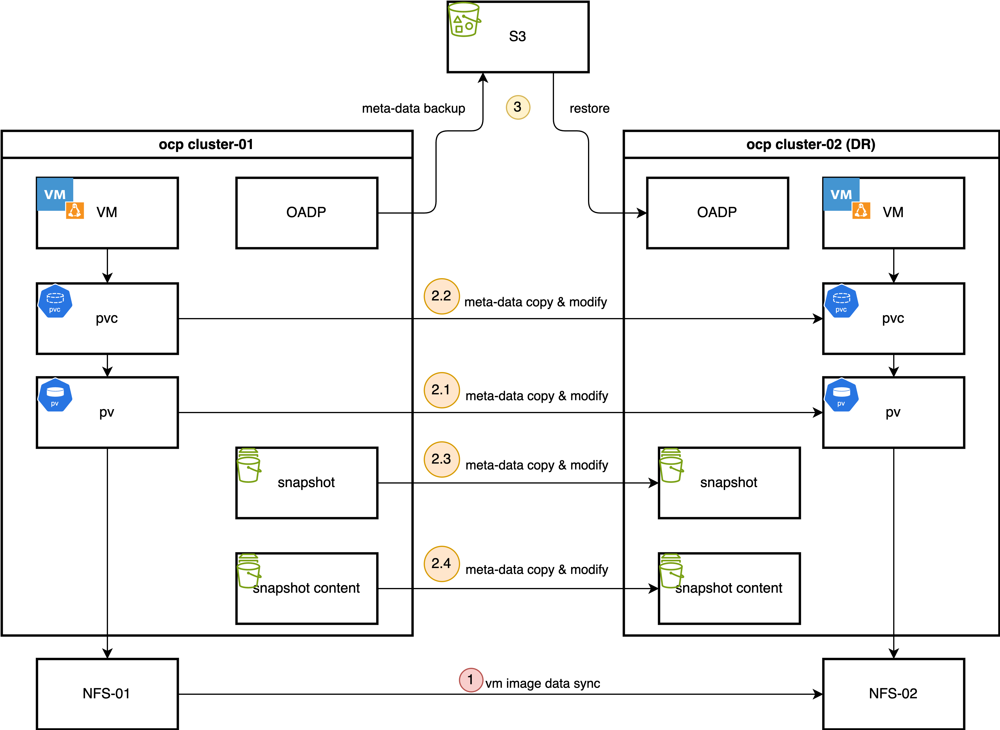
2. Prerequisites: Operator Installation
Install OpenShift Virtualization
This guide focuses on the disaster recovery of virtual
machines, so the OpenShift Virtualization operator
is a primary requirement. Install it from the OperatorHub in
your OpenShift cluster.


Since we are using a custom NFS storage solution, we must
create a StorageProfile to inform the Containerized
Data Importer (CDI) component of OpenShift Virtualization how to
interact with it. This profile defines the supported
accessModes and volumeMode.
cat << EOF > $BASE_DIR/data/install/cnv-sp.yaml
apiVersion: cdi.kubevirt.io/v1beta1
kind: StorageProfile
metadata:
name: nfs-dynamic
spec:
claimPropertySets:
- accessModes:
- ReadWriteMany
volumeMode: Filesystem
EOF
oc apply -f $BASE_DIR/data/install/cnv-sp.yamlInstall OADP Operator
We use the
OpenShift API for Data Protection (OADP) operator
for metadata backup and restore. Install the OADP operator on
both the primary (cluster-01) and DR
(cluster-02) clusters.

Next, configure a Kubernetes Secret containing
the credentials for your S3-compatible object storage bucket,
which will store the metadata backups.
# Create a credentials file for MinIO or any S3-compatible storage
cat << EOF > $BASE_DIR/data/install/credentials-minio
[default]
aws_access_key_id = rustfsadmin
aws_secret_access_key = rustfsadmin
EOF
# Create the secret in the openshift-adp namespace
oc create secret generic minio-credentials \
--from-file=cloud=$BASE_DIR/data/install/credentials-minio \
-n openshift-adpFinally, create a DataProtectionApplication
(DPA) custom resource. This configures the OADP instance,
specifying the S3 backup location and enabling the necessary
plugins for OpenShift, KubeVirt (for VMs), and CSI.
# Define the OADP instance (DataProtectionApplication)
cat << EOF > $BASE_DIR/data/install/oadp.yaml
apiVersion: oadp.openshift.io/v1alpha1
kind: DataProtectionApplication
metadata:
name: velero-instance
namespace: openshift-adp
spec:
# 1. Define the S3 backup storage location
backupLocations:
- name: default
velero:
provider: aws
default: true
objectStorage:
bucket: ocp
prefix: velero # Backups will be stored under the 'velero/' prefix
config:
# For non-AWS S3, provide the endpoint URL
s3Url: http://192.168.99.1:9001
region: us-east-1
# Reference the secret containing S3 credentials
credential:
name: minio-credentials
key: cloud
# 2. Configure Velero plugins and features
configuration:
nodeAgent:
enable: true
uploaderType: kopia
velero:
# Enable default plugins for OpenShift, KubeVirt, CSI, and AWS
defaultPlugins:
- openshift
- kubevirt
- csi
- aws
featureFlags:
- EnableCSI
# 3. Configure volume snapshots and data movers (DataMover/Kopia) here
# csi:
# enable: false
# datamover:
# enable: false
EOF
oc apply -f $BASE_DIR/data/install/oadp.yaml3. Primary Site: Performing the Backup
Assume we have a project named demo on the
primary site (cluster-01) containing a running virtual
machine.
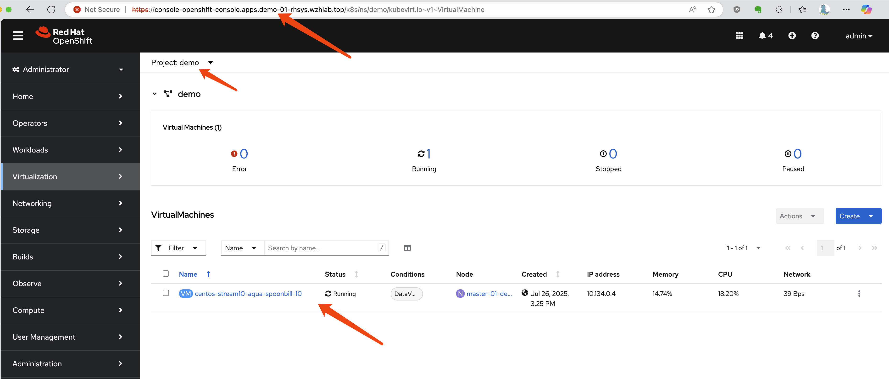
First, let’s identify the VM and its associated PVC and PV.
# Get the VM name
oc get vm -n demo
# NAME AGE STATUS READY
# centos-stream10-aqua-spoonbill-10 3d5h Running True
# Get the PVC name associated with the VM
oc get vm centos-stream10-aqua-spoonbill-10 -n demo -o jsonpath='{.spec.template.spec.volumes[*].dataVolume.name}' && echo
# centos-stream10-aqua-spoonbill-10-volume
# Get the PV name bound to the PVC
oc get pvc centos-stream10-aqua-spoonbill-10-volume -n demo -o jsonpath='{.spec.volumeName}' && echo
# pvc-7147333f-2db5-4b3f-9320-aac8da5170e2Now, we create a Velero Backup object. The key
configuration here is snapshotVolumes: false, which
instructs OADP to back up only the resource definitions (YAML)
and not the data within the volumes.
cat << EOF > $BASE_DIR/data/install/oadp-backup.yaml
apiVersion: velero.io/v1
kind: Backup
metadata:
name: vm-full-metadata-backup-03
namespace: openshift-adp
spec:
# 1. Specify the namespace to back up
includedNamespaces:
- demo
# 2. Ensure cluster-scoped resources like PVs are included in the metadata backup
# While Velero typically includes PVs linked to PVCs automatically, setting this
# to 'true' makes the behavior explicit.
includeClusterResources: true
# 3. CRITICAL: Disable volume snapshots
# This tells Velero to NOT create data snapshots of the PVs.
# It will only save the PV and PVC object definitions.
snapshotVolumes: false
snapshotMoveData: false
defaultVolumesToFsBackup: false
# 4. Specify the S3 storage location defined in the DPA
storageLocation: default
# 5. Set a Time-To-Live (TTL) for the backup object
ttl: 720h0m0s # 30 days
EOF
oc apply -f $BASE_DIR/data/install/oadp-backup.yaml4. DR Site: Recovery Process
Step 1: Synchronize Storage Data
At the DR site, the first action is to ensure the data is
synchronized. This is handled by the storage system. For our NFS
simulation, we use rsync to copy the volume data
from the primary NFS server to the DR NFS server.
# Simulate storage replication by copying the PV directory
sudo rsync -avh --progress /srv/nfs/openshift-01/demo-centos-stream10-aqua-spoonbill-10-volume-pvc-7147333f-2db5-4b3f-9320-aac8da5170e2 /srv/nfs/openshift-02/Step 2: Manually Create PV and PVC on DR Cluster
This is a critical manual step. We do not restore the PV and PVC from the OADP backup because that would cause the DR cluster to try and dynamically provision new, empty volumes. Instead, we manually create the PV and PVC to map them to the pre-replicated data.
First, define the PersistentVolume. The YAML is
based on the PV from the primary site, but the
nfs.path (or other storage-specific parameters) is
modified to point to the location on the DR site’s storage.
# pv-dr.yaml
kind: PersistentVolume
apiVersion: v1
metadata:
name: pvc-7147333f-2db5-4b3f-9320-aac8da5170e2
spec:
capacity:
storage: '36071014400'
nfs:
server: 192.168.99.1
# IMPORTANT: Path points to the replicated data on the DR NFS server
path: /srv/nfs/openshift-02/demo-centos-stream10-aqua-spoonbill-10-volume-pvc-7147333f-2db5-4b3f-9320-aac8da5170e2
accessModes:
- ReadWriteMany
persistentVolumeReclaimPolicy: Delete
storageClassName: nfs-dynamic
volumeMode: FilesystemNext, create the PersistentVolumeClaim that will
bind to this manually created PV.
# pvc-dr.yaml
kind: PersistentVolumeClaim
apiVersion: v1
metadata:
name: centos-stream10-aqua-spoonbill-10-volume
spec:
accessModes:
- ReadWriteMany
resources:
requests:
storage: '36071014400'
# This explicitly binds the PVC to our manually created PV
volumeName: pvc-7147333f-2db5-4b3f-9320-aac8da5170e2
storageClassName: nfs-dynamic
volumeMode: FilesystemApply both YAML files to the DR cluster.
Step 3: Restore Metadata with OADP
Now, create a Velero Restore object on the DR
cluster. This restore will recreate the VM and other resources
from the backup. Crucially, we exclude PVs and PVCs from the
restore process, as we have already created them manually.
cat << EOF > $BASE_DIR/data/install/oadp-restore.yaml
apiVersion: velero.io/v1
kind: Restore
metadata:
name: restore-metadata-excluding-pvs-03
namespace: openshift-adp
spec:
# 1. Specify the backup to restore from
backupName: vm-full-metadata-backup-03
# 2. CRITICAL: Exclude PVs and PVCs from the restore
# This prevents Velero from overwriting our manually created volumes.
excludedResources:
- persistentvolumes
- persistentvolumeclaims
- snapshot
- snapshotcontent
- virtualMachineSnapshot
- virtualMachineSnapshotContent
- VolumeSnapshot
- VolumeSnapshotContent
# 3. Set the resource conflict policy
# 'update' will overwrite existing resources (like the VM definition if a restore is re-run).
existingResourcePolicy: 'update'
EOF
oc apply -f $BASE_DIR/data/install/oadp-restore.yamlAfter the restore completes, the VM will be created on the DR
cluster and connected to the replicated data. In our
resource-constrained demo environment, the VM may appear as
Paused, but the process is successful.
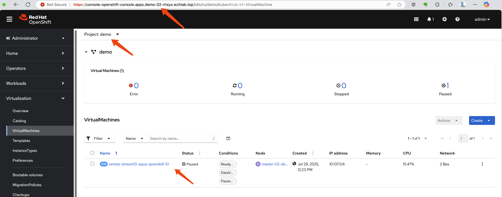
Troubleshooting a Failed Restore
If the VM fails to start correctly, a common recovery step is
to delete the restored VM object and then re-apply the
Restore manifest to try the metadata restoration
again.
# Delete the problematic VM before re-running the restore
oc delete vm centos-stream10-aqua-spoonbill-10 -n demo5. Automating Backups with Schedules
In a production environment, backups should be performed
automatically on a regular schedule. OADP supports this via the
Schedule custom resource. The following example
creates a schedule to perform a metadata-only backup every hour
at 22 minutes past the hour.
cat << EOF > $BASE_DIR/data/install/oadp-schedule.yaml
apiVersion: velero.io/v1
kind: Schedule
metadata:
name: daily-metadata-backup-schedule
namespace: openshift-adp
spec:
# 1. Define the backup schedule using a Cron expression
# This example runs at 22 minutes past every hour
schedule: 22 * * * *
# 2. Define the backup specification template
# This template is identical to the manual 'Backup' object
template:
spec:
includedNamespaces:
- demo
includeClusterResources: true
# CRITICAL: Only back up metadata
snapshotVolumes: false
storageLocation: default
# Set the retention policy for backups created by this schedule
ttl: 720h0m0s # (30 days * 24 hours = 720 hours)
EOF
oc apply -f $BASE_DIR/data/install/oadp-schedule.yamlOADP will automatically create Backup objects
based on this schedule (e.g.,
daily-metadata-backup-schedule-20250730012200) and
delete them when their TTL expires.
6. Advanced Scenario: Testing with NFS-CSI
The previous tests used a basic in-tree NFS provisioner. This section documents the process using the more modern NFS-CSI driver, which introduces complexities related to CSI snapshots.
Manual Failover with NFS-CSI
During manual testing, restoring the VM and its PV/PVC was
successful, but VirtualMachineSnapshot objects
required special handling.
- Simulate Storage Replication: Copy both the PV data and the snapshot data directories.
# Copy PV and snapshot data from primary to DR NFS server
sudo rsync -avh --progress /srv/nfs/openshift-01/pvc-72c7d2e2-ab8e-46dc-887f-2f6d6e2d0343 /srv/nfs/openshift-02/
sudo rsync -avh --progress /srv/nfs/openshift-01/snapshot-0bdcb6bd-2793-4760-b29a-2949980c34f9 /srv/nfs/openshift-02/- Create PV on DR Site: The PV definition for
CSI includes a
volumeHandleandvolumeAttributesthat must be updated to reflect the DR site’s configuration. SetpersistentVolumeReclaimPolicytoRetain.
kind: PersistentVolume
apiVersion: v1
metadata:
name: pvc-72c7d2e2-ab8e-46dc-887f-2f6d6e2d0343
spec:
capacity:
storage: 34400Mi
csi:
driver: nfs.csi.k8s.io
# Update volumeHandle to point to the DR NFS server and share
volumeHandle: 192.168.99.1#openshift-02#pvc-72c7d2e2-ab8e-46dc-887f-2f6d6e2d0343##
volumeAttributes:
server: 192.168.99.1
share: /openshift-02 # Update to DR share
subdir: pvc-72c7d2e2-ab8e-46dc-887f-2f6d6e2d0343
accessModes:
- ReadWriteMany
persistentVolumeReclaimPolicy: Retain # IMPORTANT
storageClassName: nfs-csi
volumeMode: Filesystem- Create PVC on DR Site: Create the PVC to bind to the PV.
kind: PersistentVolumeClaim
apiVersion: v1
metadata:
name: centos-stream10-gold-piranha-40-volume
namespace: demo
spec:
accessModes:
- ReadWriteMany
resources:
requests:
storage: '36071014400'
volumeName: pvc-72c7d2e2-ab8e-46dc-887f-2f6d6e2d0343
storageClassName: nfs-csi
volumeMode: Filesystem- Manually Recreate Snapshot Objects: The
most complex part is recreating the Kubernetes snapshot objects
(
VolumeSnapshotandVolumeSnapshotContent) on the DR site to point to the replicated snapshot data. This requires updating handles and references within the object specs.
Create the snapshot.
apiVersion: snapshot.storage.k8s.io/v1
kind: VolumeSnapshot
metadata:
name: vmsnapshot-6f75ec40-ca02-4f3c-9d07-ab84fc73d446-volume-rootdisk
namespace: demo
spec:
volumeSnapshotClassName: nfs-csi-snapclass
source:
volumeSnapshotContentName: snapcontent-0bdcb6bd-2793-4760-b29a-2949980c34f9 # Point to the vsc name you plan to restore toCreate the snapshot content.
apiVersion: snapshot.storage.k8s.io/v1
kind: VolumeSnapshotContent
metadata:
name: snapcontent-0bdcb6bd-2793-4760-b29a-2949980c34f9
spec:
deletionPolicy: Retain # Key point 1: Set to Retain
driver: nfs.csi.k8s.io
source:
snapshotHandle: 192.168.99.1#openshift-02#snapshot-0bdcb6bd-2793-4760-b29a-2949980c34f9#snapshot-0bdcb6bd-2793-4760-b29a-2949980c34f9#pvc-72c7d2e2-ab8e-46dc-887f-2f6d6e2d0343 # Make sure to point to nfs02
sourceVolumeMode: Filesystem
volumeSnapshotClassName: nfs-csi-snapclass # Key point 2: ClassName must be specified
volumeSnapshotRef:
apiVersion: snapshot.storage.k8s.io/v1
kind: VolumeSnapshot
name: vmsnapshot-6f75ec40-ca02-4f3c-9d07-ab84fc73d446-volume-rootdisk
namespace: demo
uid: c7f932c1-4083-49fe-8715-a4f12e2c88f2 # get uid after above vs object created- Restore and Fixup: After performing the
OADP restore (excluding PVs/PVCs/Snapshots), the
VirtualMachineSnapshotobject may enter an error state (e.g.,VolumeSnapshots missing). This often requires manually creating another set ofVolumeSnapshotandVolumeSnapshotContentobjects with corrected names and UIDs to satisfy the restoredVirtualMachineSnapshot’s expectations.
Conclusion: Manually failing over CSI snapshots is complex and error-prone. This highlights the need for a more robust, automated solution or an alternative strategy.
7. Alternative Strategy: Restore Snapshot to a New Volume
Given the complexities of replicating and restoring CSI snapshots, an alternative workflow is to restore a VM snapshot to a new PVC on the primary site before failover. This new PVC can then be replicated and used for recovery.
Trade-offs
This approach presents significant trade-offs:
- Pro: It simplifies the DR process by converting a point-in-time snapshot into a standard, replicable volume.
- Con: It requires additional storage space on the primary site for the restored volume. Storage-level deduplication can mitigate this, but it’s a key consideration.
- Con: It changes the user experience. Instead of restoring a “VM Snapshot” on the DR site, users would need to attach the replicated disk (the restored PVC) to a new or existing VM. This workflow must be clearly documented.
Implementation Steps
- Restore Snapshot to PVC on Primary Site:
Create a new
PersistentVolumeClaimon the primary cluster, using the desiredVolumeSnapshotas itsdataSource.
cat << EOF > $BASE_DIR/data/install/pv-restore.yaml
apiVersion: v1
kind: PersistentVolumeClaim
metadata:
name: restored-vm-disk-from-snapshot-demo-01
namespace: demo
spec:
dataSource:
name: vmsnapshot-312f1d32-90d2-493a-81dc-ec3020eb10cb-volume-rootdisk
kind: VolumeSnapshot
apiGroup: snapshot.storage.k8s.io
accessModes:
- ReadWriteMany
resources:
requests:
# Size must be >= the original volume size
# you can find the value from the snapshot, and find the referenced original pv -> status: capacity: storage: '1207078749'
# you can also get the value from referenced original pv -> spec: resources: requests: storage: '1207078749'
storage: 1207078749
storageClassName: nfs-csi
EOF
oc apply -f $BASE_DIR/data/install/pv-restore.yaml- (Optional) Attach and Verify: Attach the
newly created PVC to the original VM as a second disk to verify
its contents. Set the new disk as bootable to confirm it works.
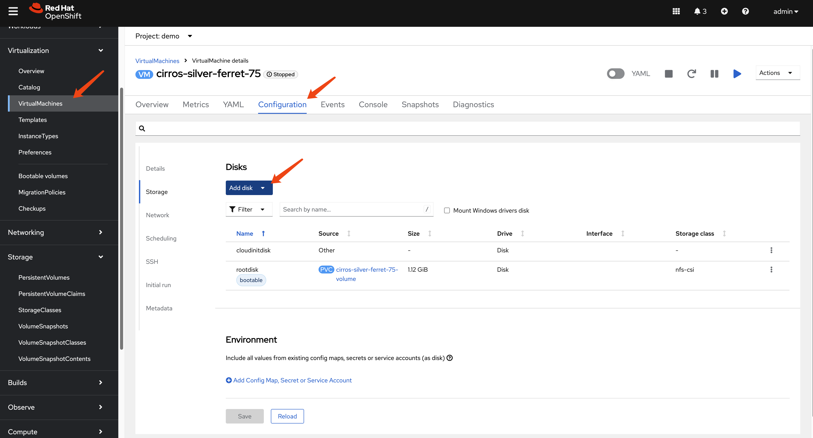
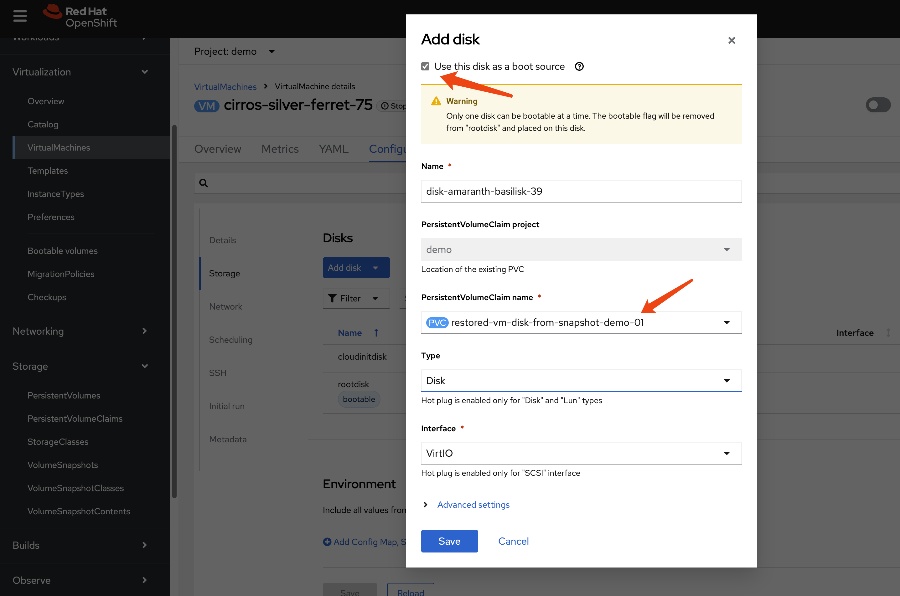
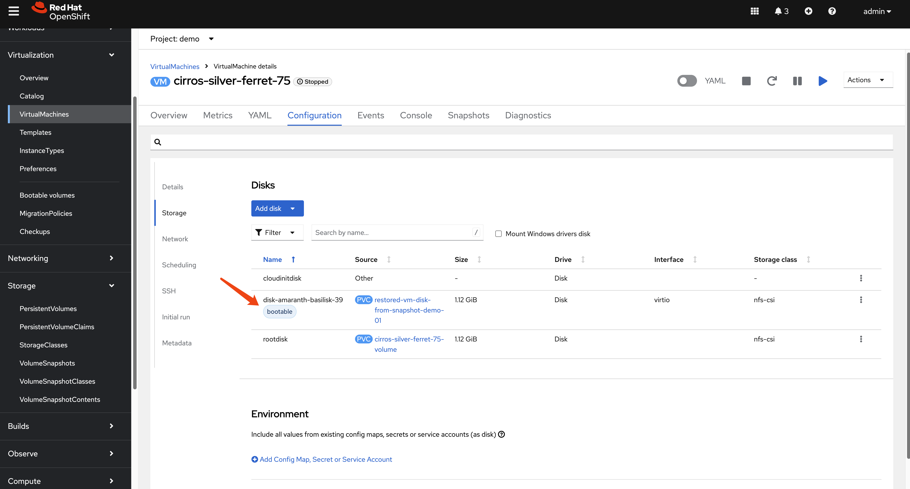
- Replicate and Recover: The new PVC
(
restored-vm-disk-from-snapshot-demo-01) is now a standard volume. Replicate its data to the DR site using storage replication. Then, follow the standard manual recovery process: create the corresponding PV and PVC on the DR cluster, and then run the OADP metadata restore.
# first sync nfs data from nfs01 to nfs02
sudo rsync -avh --progress /srv/nfs/openshift-01/pvc-2d8cc130-07a8-45cd-8ee6-ef2d6908942d /srv/nfs/openshift-02/On the DR site, create the PV.
kind: PersistentVolume
apiVersion: v1
metadata:
name: pvc-2d8cc130-07a8-45cd-8ee6-ef2d6908942d
spec:
capacity:
storage: 1207078749
csi:
driver: nfs.csi.k8s.io
volumeHandle: 192.168.99.1#openshift-02#pvc-2d8cc130-07a8-45cd-8ee6-ef2d6908942d## # Make sure to point to nfs02
volumeAttributes:
server: 192.168.99.1
share: /openshift-02 # Make sure to point to nfs02
subdir: pvc-2d8cc130-07a8-45cd-8ee6-ef2d6908942d
accessModes:
- ReadWriteMany
persistentVolumeReclaimPolicy: Retain # Key point 1: Set to Retain
storageClassName: nfs-csi
mountOptions:
- hard
- nfsvers=4.2
- rsize=1048576
- wsize=1048576
- noatime
- nodiratime
- actimeo=60
- timeo=600
- retrans=3
volumeMode: FilesystemCreate the PVC.
kind: PersistentVolumeClaim
apiVersion: v1
metadata:
name: restored-vm-disk-from-snapshot-demo-01
namespace: demo
spec:
accessModes:
- ReadWriteMany
resources:
requests:
storage: '1207078749'
volumeName: pvc-2d8cc130-07a8-45cd-8ee6-ef2d6908942d
storageClassName: nfs-csi
volumeMode: FilesystemThe restored VM will come back online using this replicated, snapshot-restored disk.
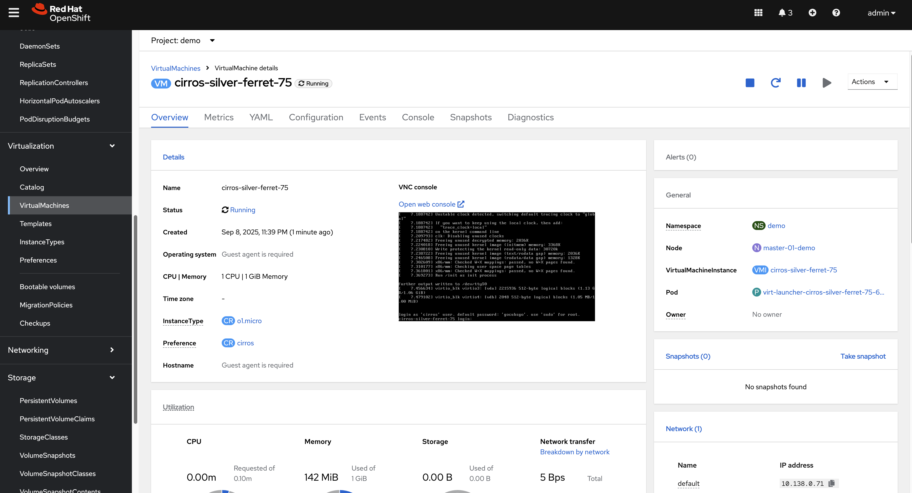
8. Path to Automation
The manual steps outlined in this document form the basis for a fully automated disaster recovery workflow. The high-level logic for an automation script (e.g., an Ansible playbook) would be:
Scheduled Metadata Backup: An OADP
Scheduleruns on the primary cluster to regularly back up VM metadata to S3.DR Site Sync Script: A scheduled job on the DR site (or a central automation controller like AAP) performs the following:
- Downloads the latest backup from S3.
- Parses the backup contents to identify all PVs and their associated storage details (e.g., NFS paths, LUN IDs).
- For each PV, triggers the storage system’s API to synchronize the data to the DR site.
- Generates modified PV and PVC manifests with DR-specific storage parameters.
- Applies these manifests to the DR cluster, pre-staging the volumes in a “ready” state.
Failover Execution: In a disaster, a failover is triggered by running a final OADP
Restoreon the DR cluster. This restore brings the VMs online, connecting them to the already replicated and pre-staged persistent volumes.
Setting up Ansible Automation Platform (AAP)
As a first step toward automation, we can install AAP on the DR cluster.
Install the Ansible Automation Platform operator
from the OperatorHub.
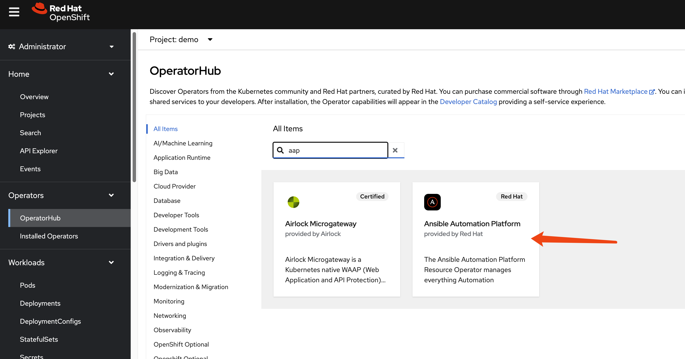
Create an AutomationController instance with
default settings.
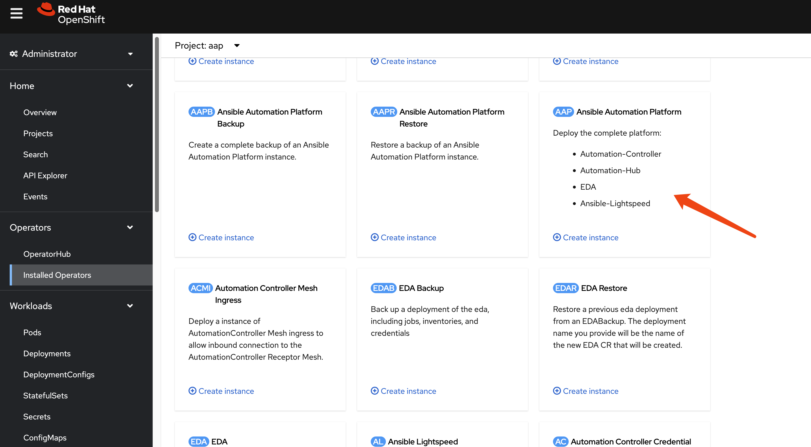
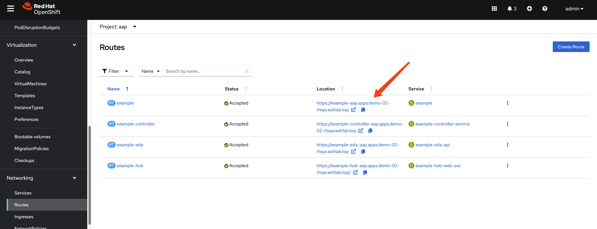
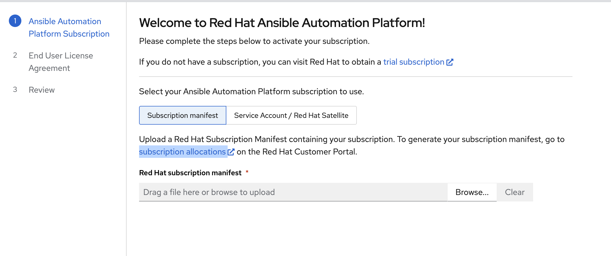
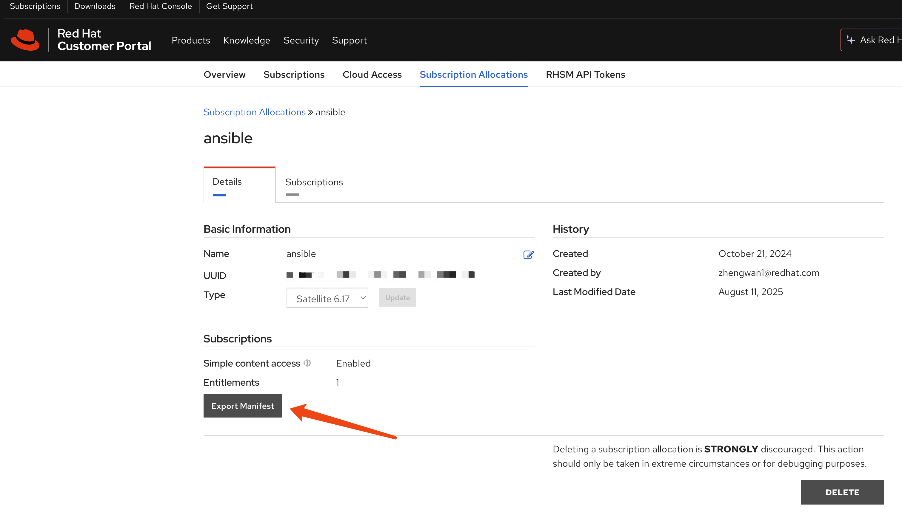
Retrieve the default admin password.
oc get secret example-admin-password -n aap -o jsonpath='{.data.password}' | base64 --decode && echo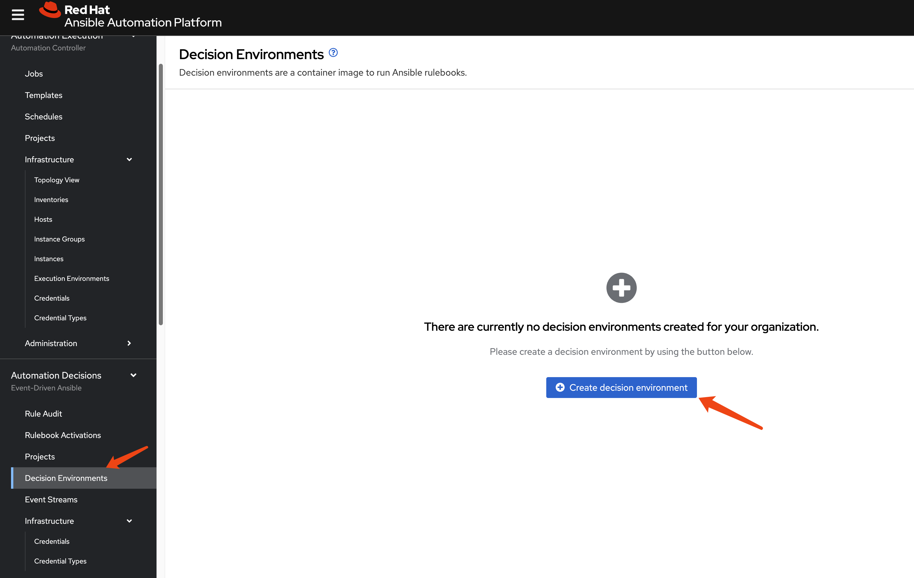
To extend the session timeout for easier management, patch
the AutomationController resource: ```yaml spec:
extra_settings: - setting: SESSION_COOKIE_AGE value: ‘86400’ -
setting: AUTH_TOKEN_MAX_AGE value: ‘86400’